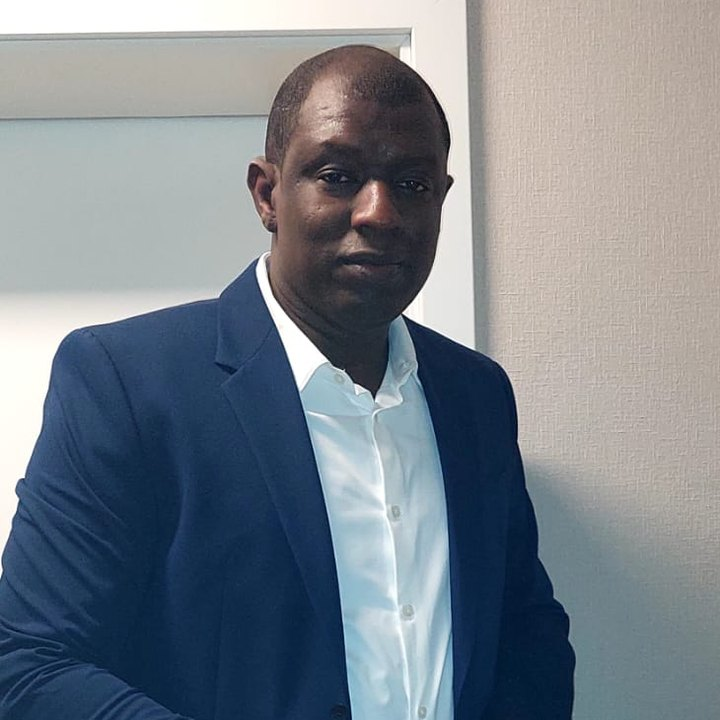

Über ACoD
Koordination
ACoD hat keine Geschäftsführung. Ein ehrenamtliches Team koordiniert das Netzwerk und vertritt es in Politik und Öffentlichkeit.
Vertritt ACoD nach außen und führt die Koordination.
Unterstützt und vertritt die Sprecherin oder den Sprecher.

Politischer VertreterBiraan S. N. J. BahPolitischer Vertreter der Afrikanischen Community in Dortmund (ACoD) im Ausschuss für Chancengerechtigkeit und Integration (ACI) der Stadt Dortmund.
Plant Feste, Begegnungen und kulturelle Angebote.
Kümmert sich um Website, Social Media und digitale Werkzeuge.
Vertretung in der Politik
Biraan S. N. J. Bah vertritt ACoD als stimmberechtigtes Mitglied im Ausschuss für Chancengerechtigkeit und Integration (ACI) der Stadt Dortmund. Dort bringt er die Anliegen der afrikanischen Community in Rat und Verwaltung ein.
Nachricht schreiben
Sie möchten jemanden aus der Koordination erreichen? Schreiben Sie uns.
Nachricht über Facebook Zur Facebook-Seite